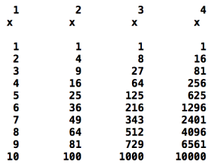

Sumar els nombres naturals des de 1 a n (natural).
SUMA DIVISORS
Sumar divisors d'un nombre natural >=2, exclòs ell mateix.
DIVIDIR USANT RESTES SUCCESIVES
Divisió natural entre dos naturals per restes successives.
MÀXIM COMÚNS DIVISORS
Màxim comú divisor de 2 naturals majors que zero.
NOMBRE DÍGITS NOMBRE
Calcular el nombre de dígits d’un nombre natural (>0).
CONTAR 'A' EN UN TEXT
Comptar caràcters 'a' en un text acabat amb ' . ' .
ÉS NOMBRE PRIMER?
Esbrinar si un nombre natural és primer.
NOMBRES PERFECTES
Es demana que l'úsuari entri un nombre natural i es mostri per pantalla si es tracta d'un nombre perfecte. Es considera que un nombre és perfecte quan: el nombre és igual a la suma dels seus divisors (excepte ell mateix).
MULTIPLICACIÓ RUSSA
Es demana que l'úsuari que faci la multiplicació russa de dos nombres naturals. La multiplicació russa funciona de la següent forma:
Un dels operands es redueix a la meitat fins arribar a 1, mentre que l'altre operand es va doblant.
De l'operand que hem reduït fins a 1, mirem quins valors ha adquirit que fossin senars al llarg de les operacions.
Busquem el valor que tenia l'operand que hem doblat en aquell punt. (si hem tardat 3 iteracions a arribar al senar, mirem quin valor tenia el que doblàvem al cap de 3 iteracions.) i ens el guardem
Sumem tots els valors guardats
CÀLCULS NOMBRE PRIMER
Es demana que l'usuari entri un nombre natural, i el programa retorni el primer nombre primer igual o més gran que l'entrat per l'usuari.
MITJANA DE SALARIS
Donats un nombre enter de salaris, calcular la mitjana. Cal pensar quan o com s'ha d'aturar el programa
MITJANA DE SALARIS
Escriure el valor de les funcions: x ,x2 ,x3 ,x4 en format de taula.
De manera que la primera columna sigui el valor de x, la segona x2,etc. I per cada fila els diferents valors de x. (de 0 fins a n).
